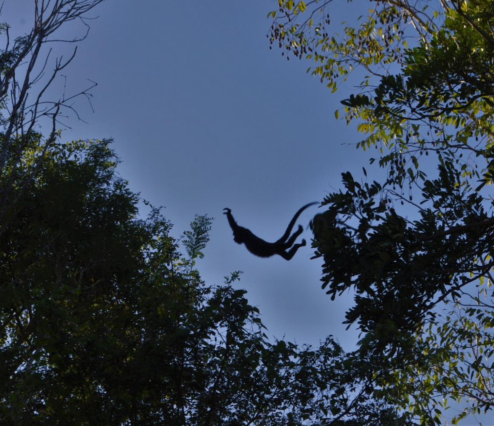
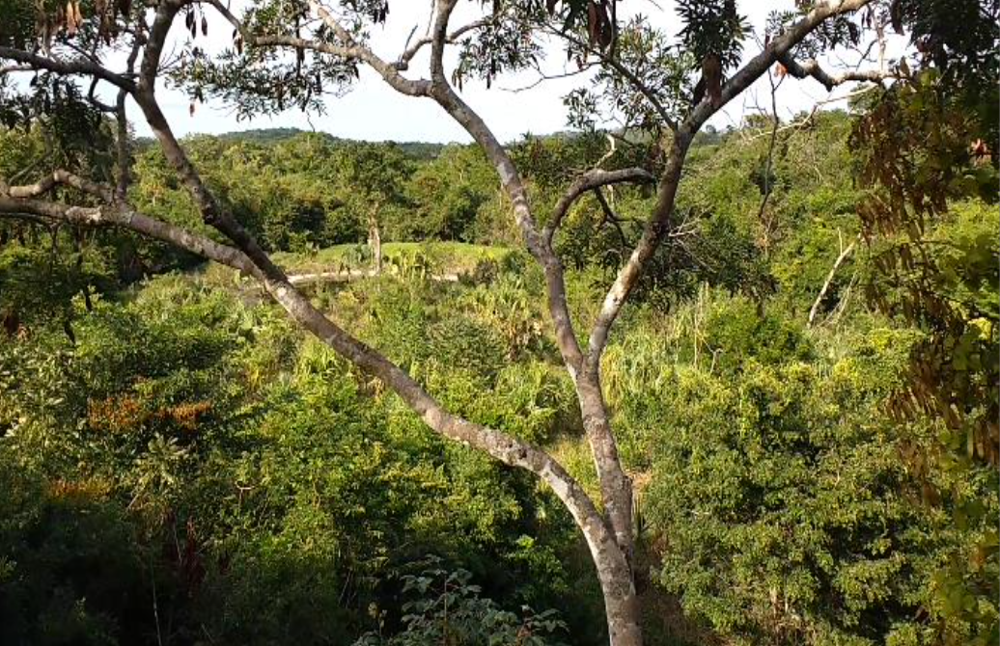
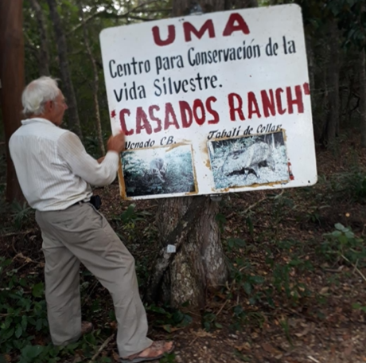
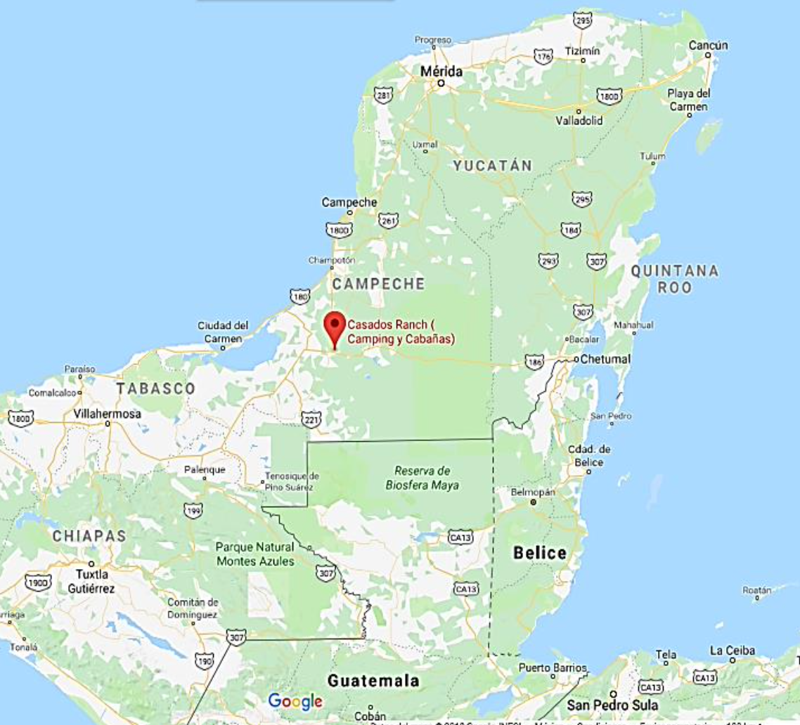

RESERVA NATURAL Y ECOTURISMO
¿Quiénes somos?
Mi nombre es Lázaro Casados y mi esposa se llama Adela Jiménez, tenemos cinco hijos: Sibila, Emeterio, Yáscara, Atala y Lazarin. Somos una familia de Campeche, del municipio de Escárcega.
Provengo de una familia que se establecio aqui a finales de la decada de los 60s. Mi padre Emeterio Casados fue un campesino, al que le agradezco mucho el habernos inculcado ideas de conservacion de la flora y fauna. Mi padre decia que una de las formas mas efectivas de conservacion es ”CUANDO NOS APROPIAMOS DE NUESTROS RECURSOS NATURALES Y LOS HACEMOS PARTE DE NUESTRA VIDA DIARIA”...



Nuestras tierras
Las dos parcelas de tierra están situadas en la carretera 186, 2,5 km al este de la ciudad de Escárcega, en un cruce de tres vías que conecta tres estados mexicanos principales: Chiapas, Campeche y Quintana Roo. Se divide en dos secciones separadas por 6 km de tierras de cultivo de uso mixto.